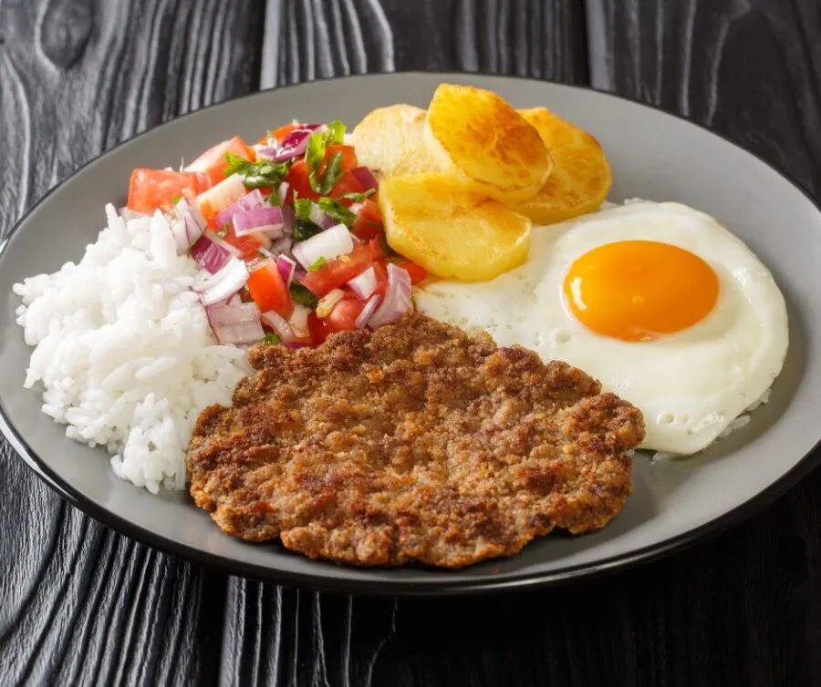

Essa receita é muito popular na Bolívia e combina pedaços de carne bovina, salsichas fritas, ovos cozidos, batata frita, especiarias, pimenta, tomate, cebola e pimentão.

Silpancho
O Silpancho é um prato típico boliviano originado da região de Cochabamba. Muito popular na cultura boliviana, essa receita picante é composta por arroz cozido, carne bovina empanada (bife), batata frita, ovos fritos, acompanhados de uma salada de tomate, pimentão e cebola.
Sopa de Maní
Essa sopa cremosa leva amendoim torrado (maní), legumes e temperos como batatas, pimentão, especiarias, alho, cebola, caldo de legumes ou de carne e às vezes macarrão ou arroz.